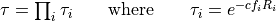

WSF_EOIR_SENSOR¶
- sensor WSF_EOIR_SENSOR¶
sensor <name> WSF_EOIR_SENSOR ... Articulated Part Commands ... ... sensor Commands ... // Miscellaneous Commands call_sensor_track_observers ... mode <name> ... Antenna Commands ... ... Receiver Commands ... ... Mode Commands ... end_mode end_sensor
Overview¶
WSF_EOIR_SENSOR implements a simplistic optical or infrared imaging sensor. This sensor produces a pseudo-image (of type WsfImage) contained within a WSF_IMAGE_MESSAGE (WsfImageMessage). Analyzing the pseudo-image can be accomplished by linking the sensor to a WSF_IMAGE_PROCESSOR, which simulates the process of image analysis and creates tracks.
Miscellaneous Commands¶
- call_sensor_track_observers <boolean-value>¶
Specifies if the ‘sensor track observers’ should be called. If true, sensor track observer events will be invoked, which enables the generation of data that allows visualization tools to display detection lines during the image formation process. These extra events, however, may cause problems to some observers if they haven’t been modified to ignore these events, which is the reason for the default being ‘false’.
Default: false
Mode Commands¶
- angular_resolution <angle-value>¶
Specifies the angle subtended by a pixel.
Note
Either angular_resolution or pixel_count must be provided.
- pixel_count <horizontal-count> <vertical-count>¶
Specifies the width and height in pixels of images from this sensor. If this command is specified, angular_resolution is ignored. Instead, the angular resolution is computed by the ratio (azimuth FOV)/(horizontal-count) and (elevation FOV)/(vertical-count).
See WsfSensor.SetFOV_Azimuth and WsfSensor.SetFOV_Elevation to change the sensor’s FOV from script.
Note
Either angular_resolution or pixel_count must be provided.
- band [ visual | short | medium | long | very_long ]¶
Defines the band of radiation that the sensor will detect. The wavelengths of the bands are defined as follows:
visual 380-760 nm short 1-3
 m
medium 3-5 m
long 8-12 m
very_long 15-30 m
m
medium 3-5 m
long 8-12 m
very_long 15-30 mDefault: visual
- atmospheric_attenuation <value> per <length-value>¶
Sometimes called the the extinction coefficient, this is the fraction of the signal (in the closed range 0 to 1) that is attenuated per unit of distance traveled at sea level. The value is adjusted to account for the density of air with the change in altitude.
This value is used to compute the transmittance. The atmosphere is modeled as a set of layers 1 kilometer thick with the path through each layer processed separately. The total transmittance along a path is computed using:

c is value of atmospheric_attenuation, fi is the ratio of the average air density in the layer to the density of air at sea level and Ri is the path length through the layer.
Default: 0.0 per meter (no attenuation)
- background_radiance <value> <power-units>/<angle-units>/<area-units>¶
Specifies the radiance of the background.
Default: 0.0
- background_radiance_above_horizon <value> <power-units>/<angle-units>/<area-units>¶
- background_radiance_below_horizon <value> <power-units>/<angle-units>/<area-units>¶
These two commands provide an alternative to the fixed background radiance provided by background_radiance. This is useful for airborne sensors where the sensor may be looking up and the sky is the background, or looking down where the ground is the background.
By default, the transition occurs instantaneously at the horizon. The background_transition_angle command may be used to provide a more gradual transition.
- background_transition_angle <lower-angle> <upper-angle>¶
This command is used along with background_radiance_above_horizon and background_radiance_below_horizon to specify a region where the transition is made from using the below horizon and above horizon background radiance values. The specified angles are relative to the local angle to the horizon with positive values being above the horizon and negative values being below the horizon. If the target is within the transition region defined by these angles, the resulting background radiance will be linearly interpolated between the above horizon and below horizon values.
Default: 0.0 deg 0.0 deg (i.e., No transition region)
- detection_threshold <value>¶
Defines the ratio of signal to noise required to declare a successful detection.
Default: none (must be specified).
- noise_equivalent_irradiance <value> <power-units>/<area-units>¶
The “noise equivalent irradiance’ (NEI) of the receiver.
Default: none (must be specified)
Receiver Commands¶
The following commands are used from the common receiver.
- antenna_pattern <pattern-name>¶
Defines the name of a pseudo-antenna pattern (defined with the antenna_pattern command, which can be used to account for aspect-dependent effects caused by the aperture through which the sensor is looking.
Note that if the antenna pattern reflects the losses through a fixed aperture (i.e., the sensor is mounted behind a window of some sort), the slew_mode of the associated articulated part should be slew_mode fixed (the default value). Otherwise, the antenna pattern will move with sensor cues.
Default: If no antenna pattern is specified, the effect will be 0 dB (i.e., no adjustment)
- internal_loss <db-ratio>¶
Defines an additional constant loss that can be applied to the computation.
Default: 0 dB (i.e., No additional losses)
Note
This should be a positive dB value as it appears in the denominator.
Infrared Mode Equations¶
- Determine the infrared radiant intensity of the target (point source) [watts/steradian]
Is = infrared_signature(az,el)
- Determine the background radiant intensity [watts/steradian]
Ib = background_radiance * optical_signature(az,el)
- Determine the contrast radiant intensity [watts/steradian]
Ic = Is - Ib
- Determine the atmospheric transmittance
- Determine the effective target irradiance [watts/m^2]
Eeff = (
 * Ic) / R2
* Ic) / R2- Determine the adjusted target irradiance to account for structural masking
Eeff = Eeff * masking_pattern(az,el)
- Determine the signal to noise
S/N = Eeff / NEI
Visual Mode Equations¶
Note
The visual mode equations are very rudimentary. Effectively if the target is in the field-of-view and there is no structural masking, the target will be detected.
- Determine the inherent contrast of the target [non-dimensional]
Cs = inherent_contrast(az,el)
- Determine the atmospheric transmittance
- Determine the inherent contrast of the target at the sensor [non-dimensional]
Cs = Cs *
- Determine the background radiance [watts/m^2/steradian]
Lb = background_radiance
- Determine the background radiance at the sensor [watts/m^2/steradian]
Lbs = (Lb *
) + path_radiance- Determine the target contrast against the background [non-dimensional]
Cs = Cs * (Lb / Lbs)
- Determine the adjusted contrast to account for structural masking
Cs = Cs * masking_pattern(az,el)
- Determine the signal to noise
S/N = 0 if contrast is 0, otherwise 1.